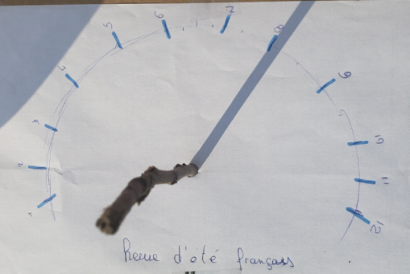
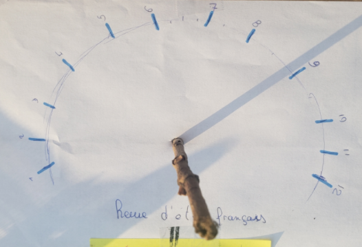
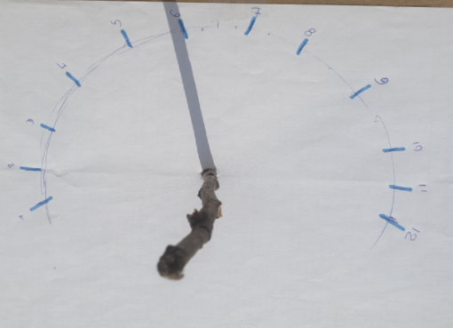
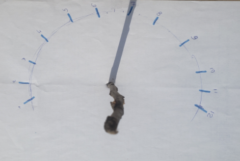
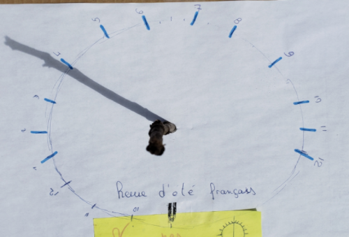
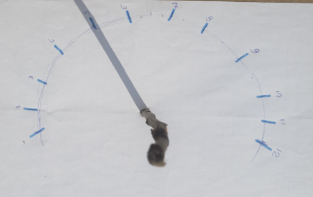
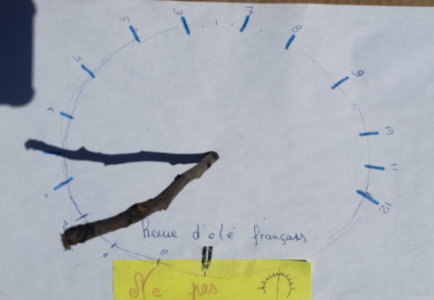
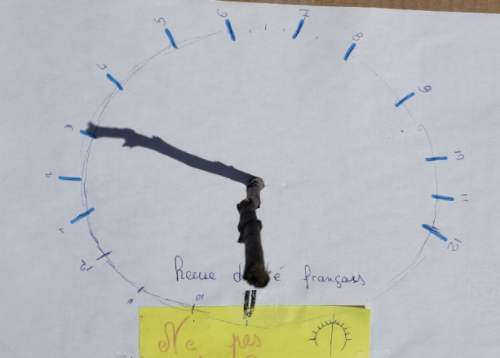
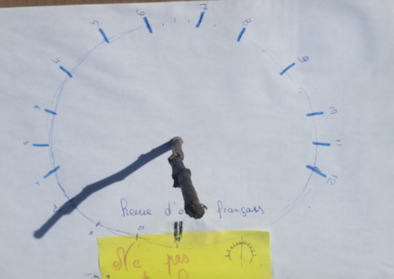
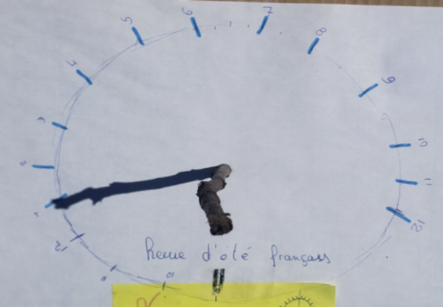

- Crédits :
- Code du livre.
- Compte rendu :
L’experience a été réalisé en plusieurs joursAu cours de l’expérience, nous avons dû déplacer le cadran solaire plusieurs fois (4), nous ne nous étions pas rendu compte que l’ombre de le maison pouvait gêner l’ombre du cadran.
Au cours des prise de photos nous nous sommes rendu compte que non seulement l’ombre ne se déplaçais pas sur un cercle mais sur un demi cercle et que de plus il fallait mieux commencer le demi cercle par le 6 aller jusqu’à 12 et repartir de 1 à 5 ( ici nous nous sommes donc adaptés ).
Il arrivait que l’ombre du bâton placer ne sois pas exactement sur le repère, mais en général, l’ombre et le repère coïncidaient.
20h
21h

18h
19h

16h
17h

14h
15h

12h
13h

- Expérience :
On place un témoin dont l'ombre n'est pas influencer par le soleil.On releve la position de l'ombre du cadran placé au soleil à heures fixes pendant une journée on marque la position et l'heure. Puis, le deuxiéme jour, on verifie aux mêmes heures si la position de l'ombre correspond.
Si c'est le cas, on peut conclure que la position du soleil dans le ciel est semblabe a chaques jours à la même heure, ce qui permet de valider notre hypothése.
Maquette

- Thème choisi :
Le cycle jour-nuit.- Problématique envisagée :
Comment un cadran solaire peut-il permettre de connaître l'heure ?- Hypothèse :
Lors de la période de révolution de la Terre (24 heures) le Soleil est en mouvement dans notre ciel, l’ombre projetée par le cadran peut donc indiquer l’heure s’il est bien positionné.- Protocole :
Fabriquer un cadran solaire.- Matériel :
- Un support plat (planche de bois)- Un bâton de plus ou moins 50 cm
- Un marqueur